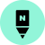
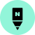

네이버로 로그인하기
네이버로 로그인하기 웨일 스페이스로 로그인하기
웨일 스페이스로 로그인하기 페이스북으로 로그인하기
페이스북으로 로그인하기소프트웨어야 놀자
대학생 멘토와 함께하는 AI수업
참여 학급 및 기관 모집네이버, 웨일 스페이스, 페이스북 아이디로 로그인이 가능합니다. 해당 서비스에 가입 되어있지 않을 경우, 해당 서비스에 먼저 가입하신 후 로그인이 가능합니다.
다양한 온/오프라인 프로그램을 통해 네이버의 지식과 경험을 공유합니다.
소프트웨어야 놀자 대학생 멘토는 전국의 초 • 중학생들에게 SW/AI 교육을 통해 AI&DATA 시대에 필요한 지식과 경험을 나누고, 함께 성장하는 교육 봉사 프로그램입니다.
초등·중학생 대상 SW/AI교육 프로그램 기획 및 운영
운영 기간 : 학기 중 (6~12월)
활동 시간 : 팀별 최소 8시간
동아리 활동 지역 내 교육 기관 연결
기관과 협의하여 온라인 또는
오프라인 수업 진행
운영 기간: 여름 방학(8월)
활동 시간: 팀별 최소 2시간
전국 초등· 중학생 대상으로 1달간 릴레이로
진행되는 온라인 원데이 교육
자율
~ 5월 4일(수)
오후 3시까지
5월11일 (수) 오후
5월 14일(토) 오후 2시
5월 16일(월)~
5월 29일(일)
nvplaysw@naver.com
 

Q.[수업 계획서] 수업 계획서는 어떻게 작성해야 하나요?

학습목표를 달성할 수 있는 요소와 활동을 찾아 아이디어와 보완점을 제시합니다. 각 차시에서 수업 흐름에 따라 학생들과 어떤 활동을 할 것인지 구체적으로 작성해주세요
Q.학교에 소속된 정식 동아리가 아니어도 지원이 가능한가요?
학교, 학과, 정식 동아리 여부에 상관없이 5인 이상 10인 이하로 구성된 대학생 팀이라면 누구나 지원이 가능합니다.
Q.지원 자격에 제한이 있나요?
소프트웨어 교육과 AI&DATA에 관심이 많고 배우고자 하는 의지가 있으며, 교육 봉사 활동에 성실하게 참여하 고자 하는 의지가 있는 대학교, 대학원 재학생 및 휴학생이라면 누구나 참여가 가능합니다.
Q.지원서 제출은 팀원 각자 해야 하나요? 중복 지워도 가능한가요?
지원서는 동아리 팀장 1명이 대표로 작성, 제출해주세요. 선발 확률을 높이기 위해 팀명만 바꿔 여러 팀으로 지원하는 경우 명단 대조를 통해 심사 대상에서 제외되며, 동일인이 복수의 동아리에서 활동하는 것은 금지합니다.
소프트웨어야 놀자
대학생 멘토와 함께하는 AI수업
참여 학급 및 기관 모집